Parker Schless (pis7) Jeremy Ku-Benjet (jk2582) Colin Muessig (cjm369)
Using an accelerator to layout an accelerator.
ASICs are composed of many macros, atomic logic units wired together. To make an ASIC, a design is specified in an HDL which is then lowered to a set of macros and nets, connections between macros. Macros are then placed on a grid and routed together. Our design accelerates the placement step on the DE1-SoC. We use a quadratic cost function for judging placements which we minimize. Solving this quadratic programming problem exposes ample opportunity for parallism which we take advantage of using the FPGA. This allows our design to achieve 10-15x speed-ups when minimizing our cost function, improving end to end placement by roughly 10% without sacrificing much in the way of result quality.
The idea of accelerating placement is not new. The larger technique we consider is analytical placement, wherein a specific cost function is minimized using analytical methods. These often involve gradient decent and are ripe with parallelism. The current state of the art is DREAMPlace which minimizes a cost function based around weighted average wirelength, taking advantage of GPUs to speed up the minimization. Jeremy came across this paper, found this cool, and Jeremy and Parker who were both working with ASICs wanted to implement something similar. More specifically, we want to accelerate placement with a design taking advantage of parallelism on the FPGA in similar places to where DREAMPlace takes advantage of the GPU. In order to lower project scope, we simply the task done by DREAMPlace by using a simpler, quadratic cost model and only implementing global placement: an initial, off-grid placement which, where it to be used, must be legalized. The cost model and high level global placement algorithm we based on an old (2007) survey by Yao-Wen Chang, Zhe-Wei Jiang, and Tung-Chieh Chen: Essential Issues in Analytical Placement Algorithms.
Global placement can be formulated as an optimization problem minimizing an approximation for the wirelength used to connect macros without macros overlapping. We begin by considering the problem of minimizing wirelength and will return overlapping.
We will use analytical methods to minimize wirelength, so we need a differentiable wirelength model. For simplicity, we choose a quadratic model for wirelength. The \(x\) and \(y\) coordinates are independant and summed so we present just the cost due to the \(x\) component. Given the \(x\) positions of all macros in a net, \(E\), we assign $$L_E = \sum_{x_i, x_j \in E}\frac{2}{\left|E\right|} (x_i - x_j)^2$$ Without the \(\frac{2}{\left|E\right|}\) this cost would model routing as a clique, overweighting large nets. Wires tends to look more like a spanning tree, so we scale by the ratio of connections in a spanning tree to the number in a clique, \(\frac{\left|E\right|}{\binom{\left|E\right|}{2}} = \frac{2}{\left|E\right|}\). Let \(N\) be the set of nets in the design. We sum this per net cost for every net \(E \in N\) to get a total cost: $$L = \sum_{E\in N}L_E$$
In order to optimize this, we want to frame this as a quadratic programming problem, finding \(Q\) and \(c\) such that \(L = \frac{1}{2}\mathbf{x}^\intercal Q\mathbf{x} + c^\intercal\mathbf{x}\) where \(\mathbf{x}\) is a vector of movable macro positions. We will rewrite \(L_E\) so that the values for \(Q\) and \(c\) become obvious. Given a macro at position \(x_i\) there are two cases. Either it is connected to a macro at position \(x_j\), or it is connected to a pin at a constant position \(p_i\) (e.g. an io pin). Write the positions of constant position pins \(P(E)\) and the positions of macros be \(M(E)\). For convenience, let \(m = \left|M(E)\right|\). $$\begin{aligned}L_E &= \frac{2}{\left|E\right|}\sum_{x_i \in M(E)} \left(\sum_{x_j \in M(E)}(x_i - x_j)^2 + \sum_{p_j \in P(E)} (x_i - p_j)^2\right) \\ &= \frac{2}{\left| E \right|} \sum_{x_i \in M(E)} \left(\sum_{x_j \in M(E)} x_i^2 + x_j^2 - 2x_i x_j + \sum_{p_j \in P(E)}x_i^2 + p_j^2 - 2x_ip_j \right) \\ &= \frac{2}{\left|E\right|}\sum_{x_i \in M(E)} \left(\sum_{x_j \in M(E)}2x_i^2 + x_j^2 -2x_ix_j + \sum_{p_j \in P(E)} p_j^2 - 2x_ip_j\right) \\ &= \frac{2}{\left|E\right|}\left(\sum_{x_i, x_j \in M(E)} 2x_i^2 + \sum_{x_i, x_j \in M(E)}x_j^2 - \sum_{x_i, x_j \in M(E)}2x_ix_j + \sum_{x_i \in M(E)}\sum_{p_j \in P(E)} p_j^2 - 2x_ip_j\right) \\ &= \frac{2}{\left|E\right|}\left(\sum_{x_i \in M(E)} 3mx_i^2 - \sum_{x_i, x_j \in M(E)}2x_ix_j + \sum_{x_i \in M(E)}\sum_{p_j \in P(E)} p_j^2 - 2x_ip_j\right) \\ &= \frac{2}{\left|E\right|}\left(\sum_{x_i \in M(E)} (3m-2)x_i^2 - \sum_{x_i, x_j \in M(E), i \neq j}2x_ix_j - \sum_{x_i \in M(E)}2x_i\sum_{p_j \in P(E)}p_j + m\sum_{p_j \in P(E)} p_j^2\right) \end{aligned}$$ From the above summation, we can read off the portion of \(Q_{i, j}\) and \(c_i\) that \(E\) contibutes. The first two terms describe the values in \(Q\) and the third term describes the values in \(c\). We ignore the \(m \sum_{p_j \in P(E)}p_j^2\) as constants do not change the minimum \(\mathbf{x}\) when optimizing \(L\). We sum these contibutions over each \(E \in N\) to get \(Q\) and \(c\).
To minimize \(L\), find when \(\nabla L = Q\mathbf{x} + c = 0\). This finds a minimum as \(Q\) is positive definite: $$\forall E \in N, 0 < \sum_{x_i, x_j \in M(E)} (x_i - x_j)^2 < \mathbf{x}^\intercal Q_E \mathbf{x} \implies 0 < \mathbf{x}^\intercal Q \mathbf{x}$$ We find a solution for \(Q\mathbf{x} + c = 0\) using the congugate gradient method.
A full explination of the conjugate gradient method is beyond the scope of this article and can in a text or class on numerical analysis. An algebra heavy explanation can be found in Cornell's CS 6220 and a more geometric approach can be found in Jonathan Richard Shewchuk's An Introduction to the Conjugate Gradient Method Without the Agonizing Pain. Here, we will present a description of and loose intuition for the technique. This section is based on the two aformentioned resources and a conversation with Jason Klein. (thanks!!!)
We can notice that when defining \(Q\), \(i, j\) are symmetric and thus \(Q\) is symmetric. Therefore, we can use the congugate gradient method to solve \(Q\mathbf{x} + c = 0 \implies Q\mathbf{x} = 0c\). The conjugate gradient method finds an \(\mathbf{x}_k\) close to \(\mathbf{x}\) by minimizing the residual: \(r = -c - Q\mathbf{x}_k\). To do this, it starts with an initial guess at a solution \(\mathbf{x}_k = 0\) and computes the residual, \(r_k = -c - Q\mathbf{x}_k\). It then takes a vector, \(p_k\) (\(p_0 = -c\)) and scales it by some \(\alpha\) so taking \(x_{k+1} = x_k + \alpha p_k\) causes \(r_{k+1}\) to have no \(p_k\) component. The algorithm then iterates this process with more \(p_k\) pointing in different directions, formally \(p_k\) which are \(Q\)-orthogonal, i.e. \(p_iQp_j = 0\). To do this efficiently, the algorithm maintains the following three recurrences, computing them for larger values of \(k\) until \(r_k\) is below a tunable threshold. For convience, let \(\alpha_k = \frac{r_k \cdot r_k}{p_k \cdot Qp_k}, \beta_k = \frac{r_{k+1} \cdot r_{k+1}}{r_k \cdot r_k}\). Note that \(r_{k+1}\) does not depend on \(\beta_k\) so \(\beta_k\) is computable. The three recurences are as follows: $$\begin{align} \mathbf{x}_{k+1} &= \mathbf{x}_k + \alpha_k p_k &&\quad \text{removing }p_k \text{ from }\mathbf{x}_k\\ r_{k+1} &= r_k - \alpha_k Q p_k &&\quad \text{updating the residual after changing the approximation of } \mathbf{x} \\ p_{k+1} &= p_k + \beta_k p_k &&\quad \text{getting the next vector in the sequence of } p_i \\ \end{align}$$ When \(r_k\) is below the threshold, the algorithm simply outputs the solution \(\mathbf{x}_k\).
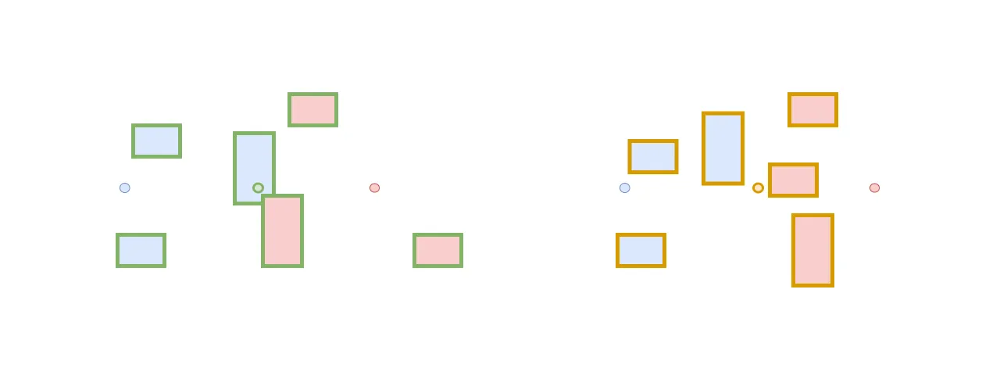
Using the above cost function and the conjugate gradient method, we can minimize wirelength. However, this tends to cause macros to clump together and overlap. Therefore, we add a partition step to pull macros apart. First, the above algorithm is run to find an inital placement with overlaps. Then a fake, stationary pin is added one forth of the way across the way across the placement area. The left half of the macros (measured by area) are connected to this pin. This process is repeated with the right side macros. Intuitively, this assigns macros a "side" of the bisected placement area. The placement processes is then run on this new design with the two fake nets. If there is still large amounts of overlap (in particular, density below a certain threshold), this process recurses until overlap is sufficiently small.
[TODO: end-to-end flow -- LEF/DEF parse (explain what LEF and DEF are - see "What each file contains" from GitHub README) -> Q/c build -> CG solve -> overlap reduction -> visualization.]
[TODO: what runs on HPS ARM vs FPGA fabric and why.]
[TODO: prior work in analytical placement / FPGA-accelerated linear solves]
Before delving into any logic implemented on the FPGA, it is worth spending some time giving insight into relevant software. This comes in two forms:
Both of these are explained in detail in the sections below.
To process input data, we have a dedicated LEF/DEF parser script, lefdef-parser.py. It is
class-based, and has one public method for each of the 4 major steps it performs:
Every placement input is a pair of LEF and DEF files, kept in lef/ and def/ subdirectories of the benchmark folder:
benchmarks/
iccad04/
DMA/ { lef/dma.lef, def/dma.def }
DSP1/ ...
DSP2/ ...
RISC1/ ...
RISC2/ ...
custom/
simple_logic_10/ { lef/simple_logic_10.lef, def/simple_logic_10.def }
mixed_macro_10/ ...
parallel_chains_50/ ...
mesh_grid_25/ ...
dense_pack_36/ ...
size_extremes_mix/ ...
star_fanout_31/ ...
two_clusters_bridge/ ...
This method will do all of the following:
Here, the script scans the LEF file and extracts relevant physical library information. It needs the name, width, and height of each macro, as well as the database unit scaling. Any other information—such as routing information on layers and vias—is not needed, and is therefore ignored by the parser. An example displaying information retrieved by the parser is shown below.
VERSION 5.4 ;
NAMESCASESENSITIVE ON ;
UNITS
DATABASE MICRONS 100 ; --> USED: unit scaling
END UNITS
MACRO MED
CLASS CORE ;
ORIGIN 0.000 0.000 ;
SIZE 0.4 BY 0.4 ; --> USED: width and height
SYMMETRY x y ;
PIN Y --> USED: pin name (Y)
DIRECTION OUTPUT ;
PORT
LAYER metal1 ;
RECT 0.0 0.0 0.4 0.4 ;
END
END Y
PIN A --> USED: pin name (A)
DIRECTION INPUT ;
PORT
LAYER metal1 ;
RECT 0.0 0.0 0.4 0.4 ;
END
END A
END MED
Like with the previous method, the script will parse the DEF file and extract only the necessary information. It picks out information on the design name, units, die area, components (instance name, macro, and position), nets (net name and pin connections), and I/O pins (pin name, associated net, and position). Any property definitions are unneeded and skipped. An example displaying information retrieved by the parser is shown below.
VERSION 5.4 ;
NAMESCASESENSITIVE ON ;
DIVIDERCHAR "/" ;
BUSBITCHARS "[]" ;
DESIGN dense_pack_36 ; --> USED: design name
UNITS DISTANCE MICRONS 100 ; --> USED: units
DIEAREA ( 0 0 ) ( 500 500 ) ; --> USED: die area
COMPONENTS 36 ; --> FROM EACH, USE: component name, macro, and position only
- U1 MED + PLACED ( 30 30 ) N ;
- U2 MED + PLACED ( 105 30 ) N ;
. . .
- U36 MED + PLACED ( 405 405 ) N ;
END COMPONENTS
PINS 2 ; --> FROM EACH, USE: pin name, net, and position only
- in0 + NET in0 + DIRECTION INPUT + USE SIGNAL + PLACED ( 0 250 ) N ;
- out0 + NET n35 + DIRECTION OUTPUT + USE SIGNAL + PLACED ( 500 250 ) N ;
END PINS
NETS 37 ; --> USE ALL: contains net name and pin connections
- in0 ( PIN in0 ) ( U1 A ) ;
- n0 ( U1 Y ) ( U2 A ) ;
. . .
- n35 ( U36 Y ) ( PIN out0 ) ;
END NETS
END DESIGN
Once the LEF/DEF files have been parsed, they can be converted into a single JSON file. A number of dataclasses are
defined in json_utils.py to make this easier: Macro, Component, IOPin,
Net, and Netlist. To create the JSON file, we initialize a Netlist object using
the data extracted from the LEF/DEF files previously and serialize it into JSON format. An example showing this
intermediate JSON format is shown below.
{
"design_name": "dma_top",
"dbu_per_micron": 100,
"die_area": [-204000, -204000, 204400, 204400],
// [xl, yl, xh, yh] in DBU
"macros": {
"INV": { "width": 0.1, "height": 0.1, "pins": ["A", "Y"] },
// microns
"BUF": { "width": 0.1, "height": 0.1, "pins": ["A", "Y"] }
},
"components": {
"U1": { "macro_name": "INV", "x": 10, "y": 10 },
// DBU
"U2": { "macro_name": "BUF", "x": 20, "y": 10 }
},
"io_pins": [
{ "name": "clk", "net_name": "clk", "x": 0, "y": 12500 }
// DBU
],
"nets": [
{ "name": "n1", "pins": [["U1", "Y"], ["U2", "A"], ["U5", "A"]] }
]
}
The output file name is always chosen to be the DESIGN keyword listed in the DEF file, followed by a
.json extension.
A script called visualizer.py allows any JSON file containing physical layout information to be rendered and
visualized more clearly. When run normally with a single JSON file path as an argument, the code will boot up a Tkinter window.
Components are rendered as blue rectangles of the specified size, and I/O pins are displayed as yellow circles
along the die outline. Hovering over any of the displayed components will provide information about that component's name and
macro for identification purposes. To make the visualizer tool more interactive, the user has some control over the pop-up window:
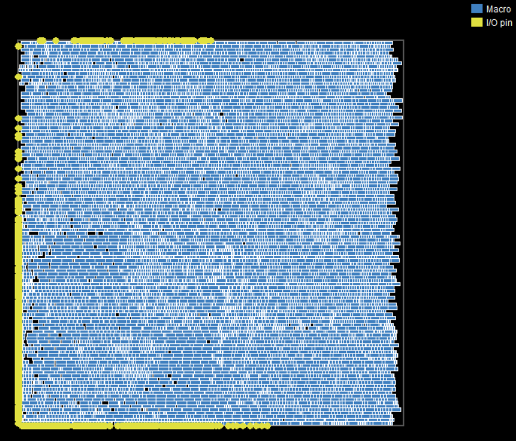
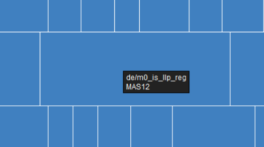
When run with a --png <out.png> <in.json> flag, the script will instead run in headless mode, rendering
a single PNG image without a Tk window. This is useful for automating rendering images after each run.
One baseline placer written in idiomatic Python is implemented in sw-baseline-python/placer.py. Its purpose is
simple: achieve algorithmic correctness at all costs, disregarding any tradeoff in speed. This makes it valuable as a point
of comparison for validating the implementations to follow. The file contains a Placer class that stores
information about the netlist, cell center positions, base and active linear systems, and the partition state. Its
methods are designed to streamline the execution of the full analytical placement algorithm. The sequence is roughly as follows:
load_netlist() to read in the JSON file produced by the LEF/DEF parser.
init_cell_positions() to place cells at initial positions within
the die area; in this baseline placer, all cells are initialized to the center of the die.
build_system() to construct the sparse quadratic system Qx=-c
and Qy=-c using clique net decomposition, where each net is converted into a set of weighted two-pin connections
between all pins.
solve_cg(), solving the linear system using scipy.sparse.linalg.cg
to obtain the initial wirelength-optimal placement; this minimizes quadratic wirelength but ignores overlap constraints. We
exit when max_iter=1000 is exceeded, or the algorithm is deemed to have converged by comparison
to a predefined threshold; otherwise, Step 4 is repeated.
MAX_OUTER_ITER=15 is exceeded,
or when the overlap between cells is considered acceptable (i.e. max bin density < 0.75); otherwise, Step 5 is repeated.
write_output(), producing a netlist
with updated cell coordinates for visualization and downstream processing.
The C++ baseline placer, which is stored in sw-baseline-c/placer.cpp, is nearly identical in its implementation to
the Python baseline. It follows the same JSON I/O format, same algorithm, and even the same convergence criterion. The only
real difference of note is that the C++ file itself is multi-purpose. As a standalone software placer, it is designed to perform
cg_solve() using hand-rolled double-precision logic; however, when the correct flags are set, placer.cpp
doubles as a placer front-end with which a hardware-based CG solver can seamlessly connect. In such a case, all parts of the
algorithm in between CG solve steps are handled in C++, and the rest are done in hardware (either with a verilated model or
using the FPGA itself). This will be discussed in more detail in the System Integration section.
Various hardware designs were developed to incrementally build up
to our final accelerated version (V6). We first began with a purely
functional-level model developed in Python to map out key logic
elements such as linear algebra operations to separate modules and
imagine the overall connectivity without worrying about
SystemVerilog details. The V1 Verilog is a direct implementation of
the Python FL model assuming infinite resources, and thus is not
synthesizable but is simulateable to prove functionality. The V2
Verilog tones down the full loop unrolling and integrated an M10K
memory controller to create a design which is synthesizable for the
Cyclone V FPGA. Each version thereafter implements performance
improvements as detailed below to achieve a faster and more
efficient CG solve implementation. Every revision shares the same
Q13.14 fixed-point format, the same CSR sparse layout, and the same
sw_go / sw_done
handshake to the ARM HPS, so the C++ placer can swap CG drivers
without modifying the outer placement loop.
Before any Verilog was written, the CG solver was implemented
as a Python functional-level model in
fpga/fl/CGTop.py. The FL model
implements the structure that the RTL eventually takes, which is a
CGTop driver written as a linear sequence of stages
that instantiates the four primary linalg kernels (SPMV,
VecDot, AXPY, and VecNegSub)
defined in fpga/fl/LinAlg.py. The
Python sources operate on double-precision floating point values and
dense Python lists, so the model is fast to test, easy to read
alongside the reference CG algorithm, and serves as the
specification of the data flow that every subsequent RTL version
uses. A 19-case scipy-based test suite in
fpga/fl/test/CGTop-test.py
compares the FL solver's final iterate against
scipy.sparse.linalg.cg on a handmade suite of
symmetric positive-definite systems (small dense, tridiagonals up to
n=50, the n=1 boundary, arrow-pattern matrices, and
pre-converged starts) to validate that the FL model converges
correctly.
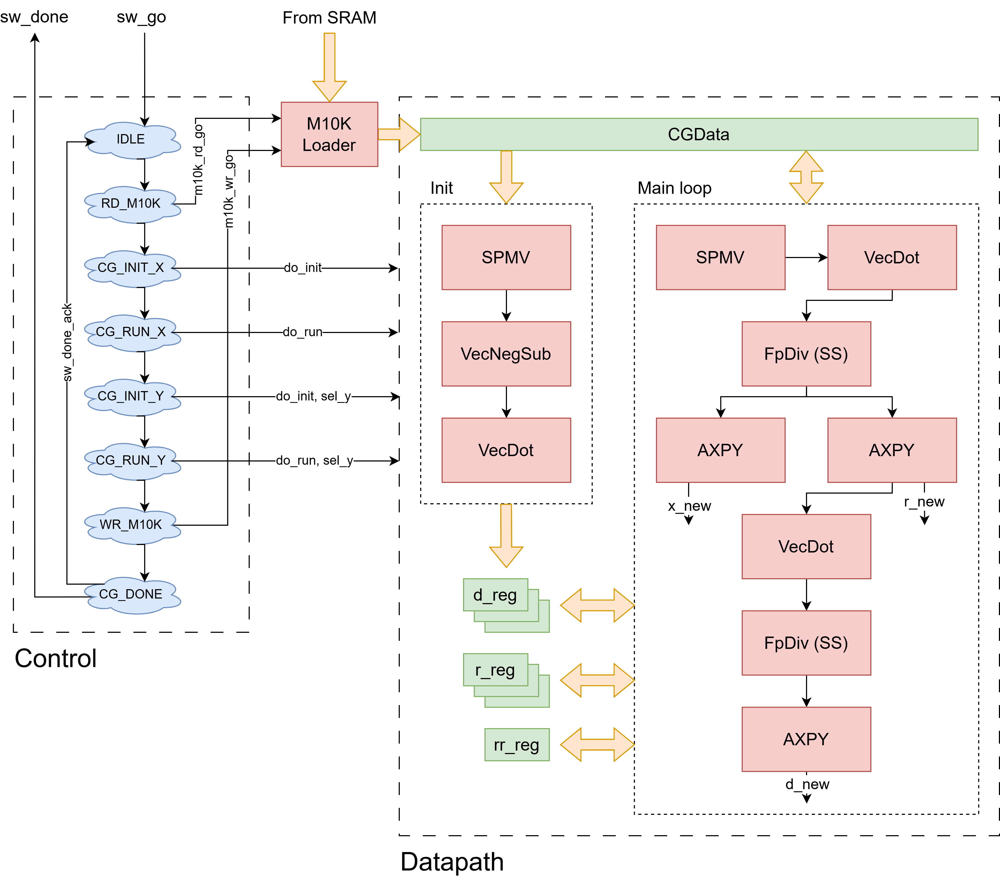
V1 is the first translation of the Python FL model into Verilog
and is intentionally unsynthesizable. Its purpose is to translate
the FL model's data flow correctly into SystemVerilog before any
sequential structure is added. V1 implements a
CGCtrl FSM (similar to the FL model's per-stage call
sequence) and a CGDpath
module that is purely combinational. There are no
always_ff blocks anywhere except for a single
register-update step at the end of each FL stage that latches
the kernel output back into the abstract "register file."
The LinAlg kernels are similarly pure functions
of their inputs. VecDot is a fully-unrolled
adder tree across all n elements, AXPY and
VecNegSub are n-wide element-wise operations,
and SPMV iterates over the CSR matrix with a generate
loop rather than a sequential FSM. The FpDiv in
FpMath is also fully combinational, using a
restoring shift-subtract algorithm that generates one
quotient bit per logic depth level rather than per clock
cycle. A separate M10KLoader helper streams
(addr, value) pairs from the simulation-only SRAM model
into the combinational register-file so the testbench can set inputs
before asserting
sw_go. The result is that a single CG iteration
collapses into one giant combinational fan-out from the SRAM read
ports through every kernel to the next register write, which exposes
the same per-stage outputs the FL model would produce. This makes
element-by-element comparison against the C++ fixed-point golden via
the DPI testbench straightforward. The cost is of course that this
design would never close timing on the Cyclone V's 50 MHz clock or
fit within the ALM and DSP resource limitations. V2 sequentializes
this design into a flat FSM.
V2 is the first synthesizable revision and creates same the
CGCtrl/CGDpath split that every subsequent
version inherits. CGCtrl is the only FSM at the
toplevel, whereas CGDpath holds no state machine of its
own and instead exposes a wide bundle of mux selects, write enables,
and latch enables that
CGCtrl drives directly.
The high-level FSM phases (in execution order) are:
S_IDLE →
S_PREP →
S_LD_X_ADDR/S_LD_X_CAPT (load
initial guess) →
S_LD_CX_ADDR/S_LD_CX_CAPT
(load cx) →
S_SPMV_INIT_FIRE/S_SPMV_INIT_COLLECT
(compute Q*x) → S_VNS_R
(r = -(cx + Q*x)) →
S_COPY_D (d ← r) →
S_VDOT_INIT_FEED (initial rr)
→ S_RR_REG_COPY.S_SPMV_RUN_FIRE →
S_SPMV_RUN_COLLECT →
S_VDOT_DQ_FEED →
S_DIV_A_SEND →
S_DIV_A_RECV →
S_AXPY_X_FEED →
S_AXPY_R_FEED →
S_VDOT_RR_FEED →
S_DIV_B_SEND →
S_DIV_B_RECV →
S_AXPY_D_FEED →
S_RUN_CHECK.iter ≥ max_iter || rr_new ≤ eps_sq || (iter > 1 && rr_new ≥ rr_old).S_WB_WRITE, then
flip the sel_y register and re-enter
S_LD_X_ADDR for the y solve, before
finally landing at S_CG_DONE on
sw_done_ack.CGDpath contains five FF-based unpacked-array
register files of size p_max_n each at
p_total_bits wide:
d_reg — search directionr_reg — residualx_vec_reg — iteratecx_reg — loaded right-hand sideq_buf — SPMV resultThere are additional registers to hold scalar values
(rr_reg, rr_new_latched,
dq_latched, alpha,
beta, and iter). The register
files expose three combinational read ports: two
p_lanes-wide indexed ports
(rd_a_* and rd_b_*) and one
single-lane port (rd_vec_*) reserved for
SPMV's vec[col_idx[j]] lookup. Each read port
has an RF-select mux (rd_a_sel etc.) whose
three-bit encoding (RF_D_REG,
RF_R_REG, RF_X_VEC_REG,
RF_CX_REG, RF_Q_BUF) is
driven from CGCtrl, plus per-lane valid masks
that force lane data to zero on out-of-range indices. A
single p_lanes-wide write port carries
wr_sel, wr_idx_ctrl_packed,
we, and a wdata_src mux that
selects between five sources:
WD_MEM — memory readbackWD_AXPY — AXPY outputWD_SPMV — SPMV outputWD_RDA — passthrough of
rd_a_data (used by
S_COPY_D)WD_VNS — the inline VNS
computation -(rd_a + rd_b)The four linalg kernels each follow the same
{Kernel}Ctrl + {Kernel}Dpath +
{Kernel}_seq wrapper pattern and the same
istream_val/rdy + ostream_val/rdy
handshake convention:
VecDot_seq: feeds
p_lanes instances of FpMulWide
into an adder tree summed into a 48-bit
p_acc_bits accumulator. It takes one
istream handshake per p_lanes-group
and emits one ostream handshake at the end
with self-clearing of the accumulator on output.AXPY_seq: instantiates
p_lanes FpMuls with a
coefficient broadcast, takes a mode bit
to select ADD vs SUB, and emits p_lanes
z values one cycle after the corresponding input
handshake.SPMV_seq: single-lane
(memory-bandwidth-bound on the shared Avalon port).
Uses a 12-state inner FSM
S_RPLO_ADDR/S_RPLO_CAPT
→
S_RPHI_ADDR/S_RPHI_CAPT
→ S_ROW_INIT →
S_VAL_ADDR/S_VAL_CAPT
→
S_COL_ADDR/S_COL_CAPT
→ S_ACC → S_EMIT,
where each ADDR/CAPT pair holds the same address
across two cycles to support the one-cycle latency
required by M10K memory. The per-nz inner loop thus
costs five cycles
(VAL_ADDR/VAL_CAPT/COL_ADDR/COL_CAPT/ACC),
plus four cycles of row prologue and one cycle of
S_EMIT per row.VecNegSub_seq: exists as a kernel
but is actually invoked inline by CGCtrl
through the WD_VNS write-data mux source
rather than as a streaming module.
S_VNS_R reads cx and
q_buf through the two RF read ports and
writes -(rd_a + rd_b) back into
r_reg directly.FpMath defines three primitives:
FpMul: fully-combinational
signed 27×27 multiply with the product truncated
back to p_total_bits.FpMulWide: the same multiply but
returns the full 48-bit shifted product so it can feed
accumulators that need the full result
(VecDot, SPMV).FpDiv: sequential val/rdy
shift-subtract restoring divide that operates on 48-bit
signed operands and returns a 27-bit quotient over
p_wide_bits + p_frac_bits + 1 iteration
cycles, roughly 63 cycles for the default Q13.14
widths.All three multipliers are mapped to the Cyclone V's
27×27 DSP blocks. With p_lanes=2 V2 uses
five DSPs (two for VecDot, two for AXPY, one
for SPMV) which is well within the chip's 87-DSP budget.
The Avalon slave bus is
single-ported and shared between
CGCtrl (LD/WB phases) and SPMV
(CSR walk), arbitrated by a ctrl_mem_src_spmv
mux in CGDpath that picks the active controller.
The memory layout is a single contiguous Avalon-mapped
on-chip SRAM with regions for the Q CSR triple, both
cx vectors, and both output vectors arranged
at base addresses p_q_val_base_addr=0,
p_q_col_base_addr=N²,
p_q_rowp_base_addr=2N², and so on. The
sel_y flag flips the active base pair so the same FSM
runs the x-dim and y-dim solves back-to-back using the same sequence
of FSM states.
The multi-lane multiply mechanism is used for all subsequent
versions up through V6. Streaming phases (S_VNS_R,
S_COPY_D, the various VecDot / AXPY feeds) advance
stream_idx as a group counter where each handshake
covers
p_lanes consecutive elements with elem = (group
<< log2(p_lanes)) + k. Per-element phases
(S_LD_*,
S_WB_WRITE, S_SPMV_RUN_COLLECT) use
stream_idx as an element counter and set only lane 0,
with the other lanes' we
bits gated off. In the final partial group when n is
not a multiple of p_lanes, CGCtrl
sets rd_a_valid[k] = rd_b_valid[k] = 0 for
the out-of-range lanes, the dpath's read mux returns zero
on those reads, and we[k] is masked off on
writeback.
V3 leaves V2's FSM-level structure intact but introduces three implementation-level changes that together substantially shorten each CG iteration.
The first and largest change is a complete rewrite of
FpDiv. V2's shift-subtract divider takes
p_wide_bits + p_frac_bits + 1 iterations per
divide and is invoked twice per CG iteration (once for
alpha, once for beta). V3
replaces it with a Newton-Raphson reciprocal in
FpDivNR that completes in roughly nine cycles
via the following FSM states:
S_IDLES_NORM — extract sign, take
absolute values, leading-zero-count |b|
over a 48-bit operand.S_ROM — look up a Q1.16
9-bit-accurate reciprocal seed r0 from a
256×17 ROM indexed by the high byte of the
normalized b_norm = (|b| << lzc)[47:31].S_NR1_M1 — compute
m1 = b_norm * r0 into a registered
nr_m1_reg.S_NR1_M2 — compute
r1 = r0 * (2 - m1) from the registered
m1.S_NR2_M1 → S_NR2_M2
— a second NR iteration that washes out
fixed-point truncation noise from the first.S_QMUL — compute
m3 = |a| * r1 over 48×17 = 65 bits.S_QFINISH — right-shift
m3 by 49 - lzc to denormalize,
saturate to
(1 << (p_total_bits - 1)) - 1 on
overflow, apply sign.Each cycle's combinational chain is held to a single
multiply plus a small subtract or select, so the divider
closes timing at 50 MHz on the same DSP blocks used by
FpMul. A generate guard in
FpMath.v falls back to a parameterized
shift-subtract divider FpDivSS when
p_total_bits > 27 (used by the Verilator
wide-bitwidth path) since the NR internals are hard-coded
to 48-bit operands and a Q1.16 seed ROM that cannot be
cleanly stretched.
The second change collapses the SPMV row
prologue. V2 reads both rp_ptr[row] and
rp_ptr[row+1] in full for every row, costing
four cycles per row before the inner loop. V3 observes
that rp_ptr[row+1] from row i is exactly
rp_ptr[row] for row i+1, so it adds two
new states S_RPHI_ADDR_NEXT and
S_RPHI_CAPT_NEXT that carry the previous
row's rp_hi forward into the next row's
rp_lo while reading only the new
rp_ptr[row+1]. The S_EMIT
transition jumps to S_RPHI_ADDR_NEXT for rows
past the first instead of looping back to
S_RPLO_ADDR, saving two cycles per row except
for row 0.
The third change is timing-driven and lives at the
CGTop boundary. V2 routes the PIO inputs
(cg_n, cg_max_iter,
cg_eps_sq, sw_go,
sw_done_ack, rst) unregistered
into CGCtrl and CGDpath, so the
FSM next-state mux sits at the far end of a long PIO fanout.
V3 inserts a single-cycle register stage at the
CGTop boundary for every PIO input, then takes
the additional step of capturing the loop-bound
n in narrow form at S_IDLE on
sw_go. The new local N_W = $clog2(p_max_n +
1) width (six bits at p_max_n=50) is
used to compute n_reg,
n_minus_1_reg,
num_groups_reg = (n + p_lanes - 1) >>
log2(p_lanes), and
num_groups_minus_1_reg once per solve. The FSM
comparators (stream_idx == n - 1,
out_idx == num_groups - 1, etc.) all switch
from 32-bit to N_W-bit width, shrinking their combinational
depth roughly five-fold and removing the most
critical-path-dominant comparator from the design.
From Verilator simulation cycle-level performance, V3 reaches
1.41× on simple_logic_10, 1.42× on mixed_macro_10, and
1.26× on parallel_chains_50 against V2, with HPWL values
bit-exact against the V2 golden once the DPI driver is rebuilt with
-DCG_GOLDEN_USE_NR so that the C++ golden also uses NR
division. An earlier V3 experiment at a 2-cycle-per-nz pipelined
SPMV inner loop passed every Verilator test but failed timing during
synthesis and was abandoned, so V3's SPMV inner loop is
the same 5-cycle-per-nz serial iteration as V2.
V4 exploits a property of the CG iteration that V2 and V3
do not implement: the per-iter updates
x ← x + alpha*d and
r ← r - alpha*q read separate operands
(x_vec_reg/d_reg vs
r_reg/q_buf) and write separate
destinations, so there is no data dependency forcing them
to be serial. V3's S_AXPY_X_FEED and
S_AXPY_R_FEED states are merged into a single
S_AXPY_XR_FEED state. The single mode-muxed
AXPY unit of V3 is split into two dedicated instances:
u_axpy_x with its mode parameter
hardwired to ADD, and u_axpy_r with
mode hardwired to SUB. Both units share the
same axpy_coef_src_beta signal (so they see
the same coefficient alpha during
S_AXPY_XR_FEED), and u_axpy_x's
handshakes are taken as canonical for FSM and counter
control since both units run in lockstep by construction.
In S_AXPY_D_FEED only u_axpy_x
is active (now feeding r and d
through rd_a/rd_b with
axpy_coef_src_beta=1 to apply beta
for the search-direction update d ← r + beta*d),
while u_axpy_r idles with no handshakes.
Driving both AXPY units in the same cycle requires
CGDpath to grow two additional read ports
(rd_c_* and rd_d_*) that feed
u_axpy_r with r_reg and
q_buf in parallel with rd_a
(x_vec_reg) and rd_b
(d_reg) feeding u_axpy_x. The
register file also gains a secondary
p_lanes-wide write port carrying
wr_sel_sec, wdata_src_sec, and
we_sec, whose index reuses the primary write's
wr_idx_ctrl_packed. Both AXPY units write
the same lane indices on the same group handshake, so the
secondary port can avoid carrying its own index bus
entirely. A new WD_AXPY_R write-data source is
added so the secondary port can route
u_axpy_r's output into r_reg
while the primary port routes u_axpy_x's output
(via WD_AXPY) into x_vec_reg.
V4 reuses the same secondary write port to fuse two
init-time phases that V3 ran sequentially:
S_VNS_R (which computes
r ← -(cx + Q*x)) and
S_COPY_D (which then copies
d ← r). In V4's S_VNS_R,
rd_a reads cx_reg and
rd_b reads q_buf, the primary
write port routes WD_VNS = -(rd_a + rd_b) into
r_reg, and the secondary write port routes
the same WD_VNS output into d_reg
on the same group handshake.
S_COPY_D is removed from the FSM entirely. Per
CG iteration V4 thus saves num_groups cycles
on the merged AXPY and another num_groups
cycles at init. The cost is one additional
p_lanes-wide AXPY's worth of DSPs which still fits
comfortably inside the Cyclone V's 87-DSP budget at
p_lanes=8. The V3 NR FpDiv, the
SPMV row-prologue collapse and 5-cycle-per-nz
inner loop, the single shared Avalon slave, the memory
layout, and the sel_y x/y sequencing are all
byte-identical to V3.
V5 reduces the cost of the per-iter SPMV kernel by reorganizing the
memory topology rather than the FSM. V4's single shared Avalon SRAM
forces SPMV to read
q_val[j] and q_col[j] sequentially
through a multiplexed bus even though the two reads have
no dependency on each other. The bus arbiter
(ctrl_mem_src_spmv) also adds a layer of
mux on top. V5 splits the single slave into seven
dedicated Qsys on-chip RAM slaves:
q_val_ram, q_col_ram,
and q_rowp_ram — all owned by
SPMV.cx_ram and cy_ram
— read by CGCtrl during the
serialized
S_VNS_R_ADDR/S_VNS_R_CAPT
phase.x_ram and y_ram —
read during S_LD_X_* and written during
S_WB_WRITE, with a sel_y
mux at CGTop picking which of the two
each engine phase talks to.Each slave is a dual-port Qsys on-chip RAM IP: the ARM-facing h2f port lives on one side and the FPGA-facing slave port on the other, so the two domains stay isolated without any explicit arbitration. Every FPGA-facing port has exactly one consumer.
The new SPMV inner loop is rewritten around
the three independent ports. The 12-state V4 FSM is
replaced by a shorter sequence:
S_RP_ADDR_FIRST/S_RP_CAPT_FIRST
— row 0's rp_lo read.S_RP_ADDR_HI/S_RP_CAPT_HI
— row 0's rp_hi read.S_RP_ADDR_NEXT/S_RP_CAPT_NEXT
— subsequent rows, which carry
rp_hi → rp_lo and read only the new
rp_ptr[row+1].S_ROW_INIT, then the per-nz inner
loop:
S_NZ_ADDR — dpath drives
q_val_addr and q_col_addr
simultaneously to the same j_idx.S_NZ_CAPT — latches both
q_val_rdata and q_col_rdata
in parallel.S_ACC — does
acc += val * vec[col] using the
captured values.Per-nz cost drops from V4's five cycles to three. The
dedicated cx_ram and cy_ram ports
also let the central cx_reg register file be
removed entirely, and S_VNS_R is serialized to
S_VNS_R_ADDR → S_VNS_R_CAPT
with single-lane writeback, where
S_VNS_R_CAPT uses a new
WD_VNS_SCALAR write-data source that reads
cx directly from M10K through a
vns_cx_rdata port and writes
-(cx + q_buf) back into r_reg
(with the V4 secondary-port fanout into d_reg
preserved). The S_LD_CX_* states are gone
entirely, and removing cx_reg reclaims
p_max_n*p_total_bits flops.
On parallel_chains_50, total HW CG cycles drop from roughly 186,000 (V4) to 131,088 (V5), a 1.42× improvement. The architecture is drawn directly from DuBois et al.'s 2008 FCCM paper, "An Implementation of the Conjugate Gradient Algorithm on FPGAs," which striped its CSR arrays across two parallel banks for the same reason. Their other architectural ideas (two-FPGA partition, ELLPACK, double-precision DMA) did not transfer to this project's single Cyclone V at 50 MHz with on-chip Q load, but the multi-bank memory partitioning was the key insight.
One follow-on experiment, V5_deep, also forked V5
to push the SPMV inner loop from 3 cycles per
nz down to 1 cycle per nz in steady state by replacing
S_NZ_ADDR/S_NZ_CAPT/S_ACC
with a 5-stage pipeline (address → M10K read →
val_p1/col_p1 latch and
vec[col_p1] crossbar read →
val_p2/vec_p2 latch →
prod_p registered multiply →
acc add) plus a four-cycle S_DRAIN
tail. Per row with nnz=N, V5 takes
3N + 2 cycles and V5_deep takes
N + 6, so the crossover is at N ≥ 3
and V5_deep approaches a 3× SPMV
asymptote over V5 on dense rows. It passes all 16 DPI
golden tests bit-exactly but was not adopted as the
baseline because V6's parallel-engine win is orthogonal
and larger on the project's benchmark mix; V5_deep is
preserved in the tree as a drop-in alternative for future
mergers with V6's CGEngine.
V6 forks V5 (not V5_deep) and fixes the remaining
sequential dependency in the placement solve: the x and y
CG problems are independent except for sharing the Q matrix,
yet V5 and earlier solve them serially by flipping
sel_y_reg after the first writeback and looping
back to S_LD_X_ADDR for the y pass. V6
introduces a new CGEngine wrapper module
whose port list exposes exactly one dimension's worth of
slave bundles:
q_val_ram_*, q_col_ram_*,
q_rowp_ram_*.c_ram_*),
generic over cx vs cy.xy_ram_*).It internally instantiates one CGCtrl plus
one CGDpath with p_lanes=8 per
engine. The per-engine CGCtrl drops
sel_y_reg and the x-to-y loopback entirely, so
its FSM is the simpler single-dimension variant whose
S_WB_WRITE transitions unconditionally to
S_CG_DONE.
The new CGTop is a thin wrapper. It
registers sw_go and sw_done_ack
once on the 50 MHz clock for fanout control, then
instantiates engine_x and engine_y
side by side. Each engine sees the same registered
sw_go_q and the same registered
sw_done_ack_q. Their per-engine done outputs
are ANDed together as sw_done = engine_x_done
& engine_y_done. The runtime parameters
n, max_iter, and
eps_sq are broadcast identically to both
engines. engine_x wires its
q_val_ram_* bundle to the toplevel
q_val_x_ram_* slave and its c_ram_*
to cx_ram_* and its xy_ram_* to
x_ram_*; engine_y wires the
corresponding _y_ slaves. No muxing remains at
CGTop as every FPGA-facing slave port has
exactly one engine consumer.
The Avalon slave count grows from V5's seven to ten with
three Q slaves per engine
(q_val_x_ram, q_col_x_ram,
q_rowp_x_ram and the _y_
equivalents) plus the four dimension-private slaves
(cx_ram, cy_ram,
x_ram, y_ram) which were already
private in V5 and pass through unchanged. The duplication
of Q rather than arbitrating one set of Q slaves between
two engines was deliberate. Both engines' SPMVs
want a Q read every cycle, so any cycle-alternated
arbitration would halve each engine's SPMV
throughput and defeat the entire reason for adding the second
engine. A true dual-FPGA-facing-port M10K would also work but
requires bypassing the stock Altera On-Chip Memory IP's two-port
total limit with a custom shim that would add substantial RTL
complexity for roughly ten M10K of savings the project does not
need. At
p_max_n=50 the duplicated Q costs roughly
ten extra M10K blocks
(q_val=2500*27b ≈ 7,
q_col=2500*~6b ≈ 2,
q_rowp ≈ 1, doubled), which is less than
3% of the Cyclone V 5CSEMA5's 397-block budget. The
per-iter loop is thousands of solves, so the one-time
ARM-side memcpy of Q into both physical M10K trios is
negligible. The Qsys system must be regenerated with the
ten on-chip RAM IPs at 16 KB-aligned bases (the four large
Q slaves each occupy 16 KB at p_max_n=50) and
the corresponding bridge bases are reflected in
cg_fpga_mmap_driver_V6.h.
On parallel_chains_50, total HW CG cycles drop from 131,088 (V5) to 70,316 (V6), a 1.86× speedup that closely approaches the theoretical 2× ceiling. The final x and y vectors match V5 within fixed-point noise and pass all 16 DPI golden tests bit-exactly even though the golden solves the two dimensions serially.
Every RTL revision (V1 through V6 inclusive) is tested against the same Verilator-driven DPI testbench framework in fpga/hw/test/. The framework consists of three layers:
For each test case the testbench loads identical input
data into the DUT's behavioral memories and a parallel
golden_mem array, pulses sw_go,
waits for sw_done, and then calls
dpi_cg_solve on the golden array. The DPI
function runs the same Q13.14 fixed-point CG iteration the
RTL is supposed to be implementing and writes the solution
back into golden_mem. The testbench then
compares the DUT's output region against the golden region
element-by-element and reports any mismatch. The 16 cases
cover:
p_lanes partial-group
mask).The framework is wired up through
CMakeLists.txt
via an add_verilator_tb CMake function that
takes a version and an RTL directory and generates a
self-contained VCGTop_tb_$version Verilator
executable. Fixed-point widths are CMake cache variables
(INT_BITS, FRAC_BITS,
MAX_N) propagated both into the SystemVerilog
parameters via -Gp_int_bits=... and into the
golden model's C preprocessor flags
(CG_GOLDEN_TOTAL_BITS,
CG_GOLDEN_FRAC_BITS), so the DUT and the golden
stay in lockstep when the parameters are swept. V1 and V2
use the shift-subtract divide while V3 onward use the NR
divide, so the V3-V6 targets additionally pass
-DCG_GOLDEN_USE_NR to the golden model. Because
the golden and the DUT share the same data path semantics
and the same fixed-point format, the comparison is required
to be bit-exact where a single mismatched LSB anywhere in the
output region fails the test. Every revision presented in
this section passes all 16 cases bit-exactly, and the same
golden model is reused (under different driver headers) as
the reference for the C++ placer.cpp in the
system-integration step described next.
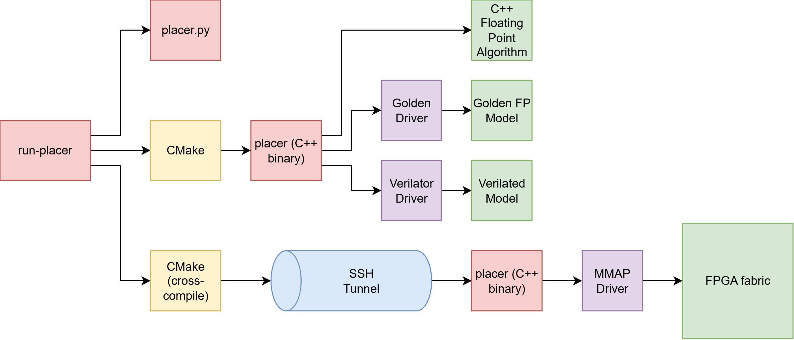
The placer's outer loop, partitioning, and JSON parsing live in
a single placer.cpp
that is reused across every backend. A short
preprocessor block near the top of the file picks one of
three CG-driver headers at compile time
(cg_golden_driver.h,
one of the
cg_verilator_driver*.h
family, or one of the
cg_fpga_mmap_driver*.h
family), and every header exposes the same
CGHwDriver class with identical
set_* / load_q_initial /
solve entry points. The placer's
solve_cg() then reduces to a single
hw_driver.solve(...) call regardless of which
backend is active.
fpga/sw/placer.cpp is a
symlink to the canonical source so the FPGA build never
forks the placer logic.
The golden driver wraps the same fixed-point CG model
used by the DPI testbench and exposes it as a
CGHwDriver. Setters write directly into the
driver's public vectors (no SRAM mirror to keep in sync),
and solve() converts the placer's
double CSR to int64_t via
v × 2FRAC_BITS with
sign-extension, calls the golden's
cg_solve twice (once each for x and y), and
writes the result back. Selected with
-DUSE_FP_GOLDEN=ON. Because no Verilator
elaboration is needed, this is the fast path for sweeping
--int-bits / --frac-bits when
investigating fixed-point precision.
The Verilator drivers
(cg_verilator_driver.h
for V2-V4, plus _v5.h and _v6.h
for the multi-slave variants) instantiate the
Verilator-generated VCGTop against
heap-allocated behavioral memory mirrors, one per Avalon
slave. A tick() helper services the simulated
bus each clock period: sample addr/wr/wdata while
clk is low, rising-edge eval, then mirror
read/write. solve() drives the same
sw_go / sw_done handshake the
real board does and counts cycles while waiting for
sw_done, which gets printed through
last_solve_cycles() for performance reports.
The on-board driver
(cg_fpga_mmap_driver.h
and the _v5.h / _v6.h variants)
replaces tick() with mmap calls
against /dev/mem. Each Qsys on-chip RAM slave
is projected from its H2F bridge base
(0xC0000000 region) into the process's address
space so setters become plain volatile uint32_t*
writes that the HPS translates into Avalon transactions to
the FPGA. The runtime parameters and handshake travel
through five PIOs on the lightweight H2F bridge at
0xFF200000
(cg_ctrl, cg_max_iter,
cg_eps_sq, cg_n,
cg_status); solve() pulses
sw_go through cg_ctrl and spins
on cg_status for sw_done before
reading the result vectors back out of the SRAM regions.
placer.cpp never branches on
"is this the board" as the only build-time-visible difference
from the Verilator path is which header gets included.
The run-placer
console script is the user-facing entry point for every
build mode (python, sw,
golden, verilated,
arm, fpga). It parses LEF/DEF into JSON,
invokes cmake with the right macros to select the driver header (and
to cross-compile to ARM for the remote modes), runs the placer
either locally or remotely, and renders the resulting placement to
PNG. For remote modes it opens one
fabric SSH session
against the board (credentials from a gitignored
.env), SCPs the binary and netlist over, runs the
placer with sudo on the FPGA path so the mmap driver
can open /dev/mem, and SCPs the result JSONs back. Two
features make iteration easy: a --sweep flag that runs
max_outer_iter from 1..16, captures a PNG per
iteration, and stitches a GIF/MP4 slideshow; and an
auto-detected batch mode that walks every benchmark in a
parent directory using one shared SSH session and prints a
cross-benchmark summary table at the end.
To be as comprehensive as possible in gauging the results of our design, tests have been run across a range of custom benchmarks. Each benchmark is a hand-written micron-scale design used to fit inside the FPGA's MAX_N=50 cap (each die is 500 DBU on a side, far below the +/-4096 representable range of the Q13.14 fixed-point format). A rough summary of each benchmark used in this section is listed in the following table:
| Benchmark | Cells | Nets | Key Structure | Primary Stress / Purpose |
|---|---|---|---|---|
dense_pack_36 |
36 | 37 | Dense 36-stage chain using relatively large cells | High utilization (~23%) and legalization/spreading behavior |
mesh_grid_25 |
25 | 35 | 5x5 2D mesh with north/west neighbor dependencies | Tests balanced 2D placement and distributed IO attraction |
mixed_macro_10 |
10 | 14 | Std cells connected between large 4.0x2.0 WIDE macros | Macro/std-cell interaction and size disparity handling |
parallel_chains_50 |
50 | 55 | Five parallel 10-stage pipelines with stage-wise cross-coupling | Primary FPGA-scale benchmark (tests max cell cap); stresses full-width CG/SPMV datapaths |
simple_logic_10 |
10 | 13 | Small INV/BUF/NAND2 logic chain with light reconvergence | Minimal end-to-end smoke test for correctness and JSON I/O; not overly constrained on density |
size_extremes_mix |
34 | 38 | Four huge macros each driving clusters of tiny cells | Extreme 30x size disparity and clustered hub-and-spoke attraction |
star_fanout_31 |
31 | 8 | Single driver feeding one 31-pin global fanout net | High-degree fanout net test; dense Q-matrix clique and slower CG convergence |
two_clusters_bridge |
32 | 34 | Two tightly connected 16-cell clusters joined by one weak bridge | Tests clustered placement with minimal inter-cluster coupling |
Functional correctness was evaluated by comparing V6 of the FPGA-accelerated CG solver against the original ARM software baseline and a floating-point golden reference implementation. At the numerical level, the FPGA solver produced bit-consistent behavior with the expected CG update equations and converged reliably across the benchmark suite. While small floating-point differences accumulated over iterative solves and partitioning steps, the overall placement flow remained behaviorally consistent with the software baseline. Higher-level placement metrics further support this functional equivalence. The convergence rate and revert rate matched closely between ARM and FPGA modes across the benchmark set, indicating that both implementations followed similar optimization trajectories and termination behavior. In practice, this means that the FPGA accelerator preserved the logical behavior of the analytical placer.
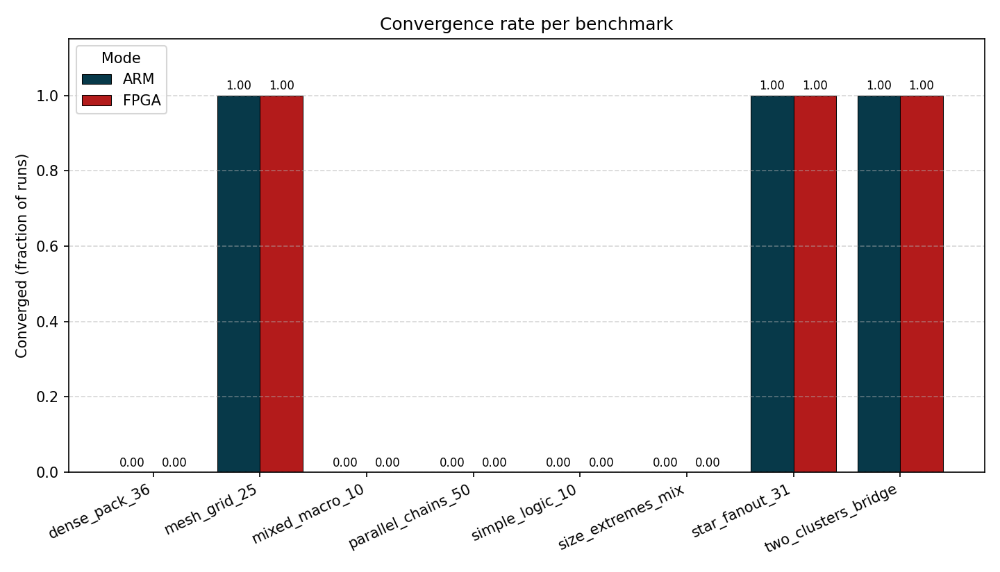
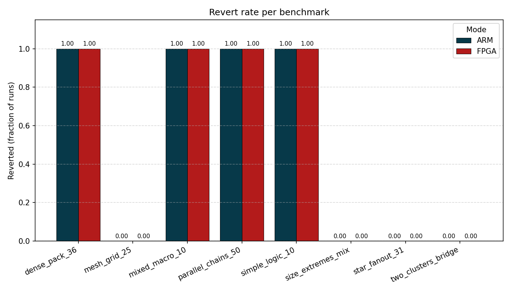
The preservation of logical behavior is further supported by analyzing the number of outer iterations per custom benchmark. With the exception of just 2 out of 8 benchmarks, the number of outer iterations matches exactly between the ARM and FPGA modes.
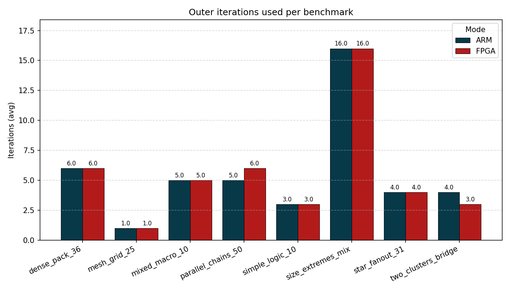
HPWL data in the section below further supports these conclusions about functional correctness.
The final half-perimeter wirelength (HPWL) results show that the FPGA solver generally follows the ARM software baseline closely,
indicating that the hardware CG solver preserves overall placement quality and connectivity behavior. Several benchmarks—including
mesh_grid_25, mixed_macro_10, and simple_logic_10—produce identical HPWL values between the FPGA
and C++ baseline, showing strong functional agreement on smaller or more regular netlists. Moderate differences appear in benchmarks such as
dense_pack_36, parallel_chains_50, and star_fanout_31, where the FPGA implementation produces slightly
higher wirelengths, likely due to small floating-point differences accumulating over multiple CG iterations. The largest difference occurs in
size_extremes_mix, which contains extreme cell-size imbalance and clustered connectivity, making it especially sensitive to small
numerical changes. Interestingly, two_clusters_bridge shows the opposite trend, with the FPGA solver achieving lower HPWL,
demonstrating that small numerical differences can sometimes lead the solver toward a different but still valid solution.
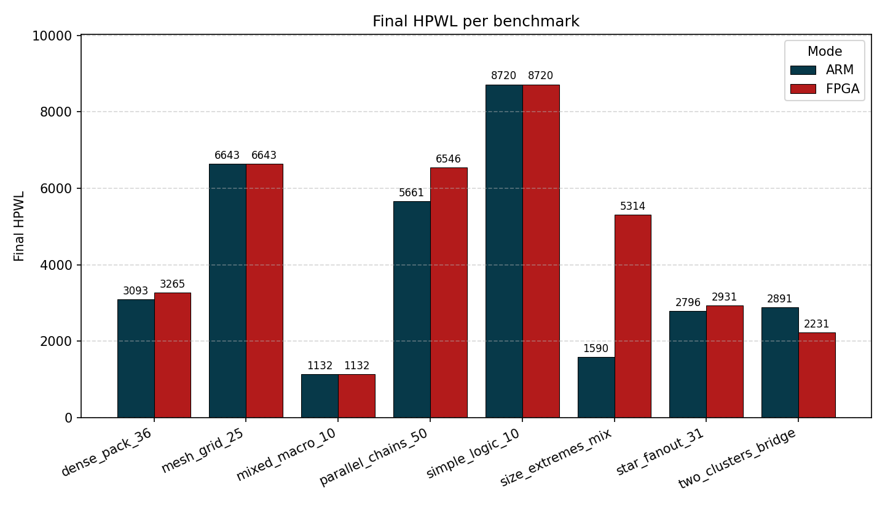
The max bin density results show larger differences between the ARM and FPGA implementations in placement spreading and
overlap behavior. Benchmarks like mesh_grid_25, simple_logic_10, and star_fanout_31
produce nearly identical density values, indicating that both solvers reached very similar final placements. However,
benchmarks such as parallel_chains_50 and size_extremes_mix show much higher density on the FPGA
implementation, meaning the cells were not spread out as effectively and more local congestion remained.
This likely comes from small numerical differences in the FPGA CG solver accumulating over multiple partition-and-anchor iterations. Slight changes in cell positions can affect partition boundaries and anchor locations, leading later iterations to diverge further from the ARM baseline. These effects are strongest in benchmarks with dense connectivity or large cell-size differences. Despite these outliers, most benchmarks still remain within similar overall density ranges.
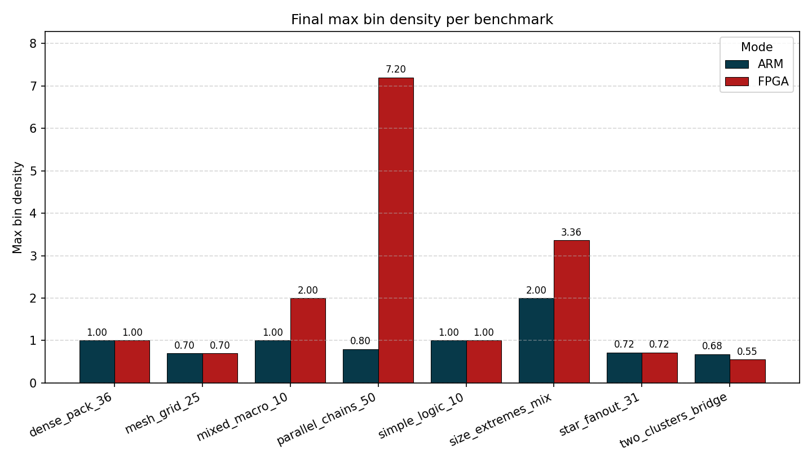
The average CG inner-loop timing results show a clear and consistent performance advantage for the V6 FPGA implementation across every
benchmark. In all cases, the FPGA-accelerated solver completes each CG solve significantly faster (factor of 5x-10x) compared to the
ARM software baseline; the total CG solve time shows comparable gains, as the number of inner loop iterations roughly matches
between ARM and FPGA mode. Smaller benchmarks such as simple_logic_10 and mixed_macro_10 already
demonstrate noticeable speed-ups, while larger or more computationally intensive designs like parallel_chains_50,
star_fanout_31, and two_clusters_bridge show the largest absolute timing reductions. The performance gains
become more pronounced as benchmark complexity increases because the FPGA implementation parallelizes the most expensive CG
operations.
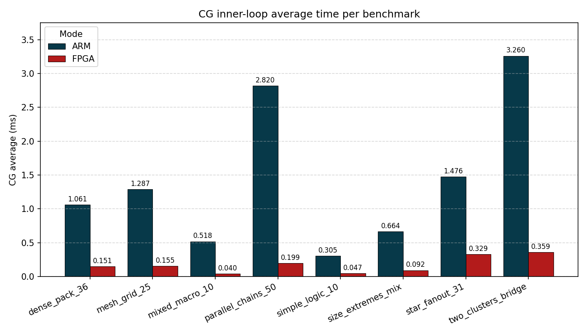
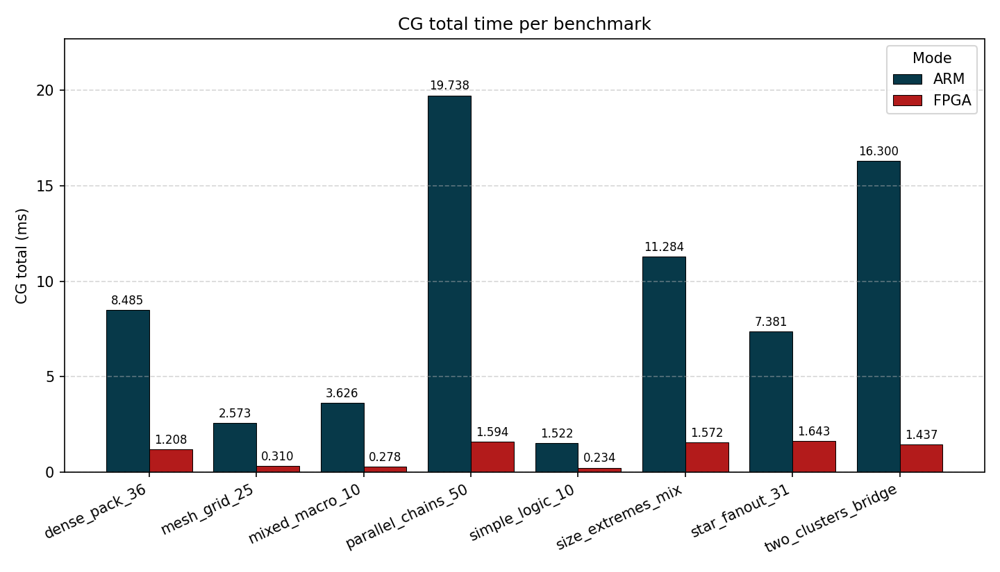
Although the FPGA implementation greatly accelerates the CG inner loop, the improvement in total placer runtime is much smaller because the CG solve represents only one portion of the complete placement flow. The overall placer also spends significant time performing tasks like partitioning, anchor generation, density evaluation, and so on, all of which still execute in software on the ARM processor. As a result, speeding up only the numerical CG kernel reduces total runtime in general. This behavior becomes especially noticeable on smaller benchmarks, where fixed software overhead can dominate the total runtime. Larger benchmarks benefit more from FPGA acceleration, because the CG computation occupies a greater fraction of execution time. This implies that without limits on the maximum number of cells, larger speed-ups in total time would be observed.
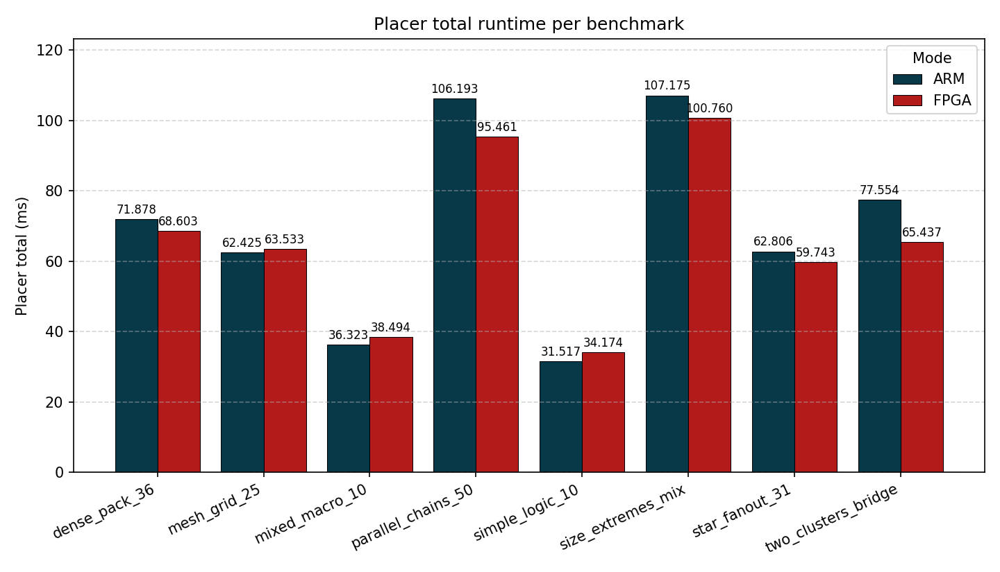
The final V6 design uses 80% of the total ALMs, 64% of the DSP blocks, and 19% of the on-board M10K blocks. This shows our design is mostly logic-constrained which makes sense given our large adder and division subciruits as well as our multi-stage FSM's. The DSP usage is directly related to the number of lanes we parameterize at the toplevel, and while we could have added more lanes, our attempts to do so resulted in routing failure. With the current setup, we use about 53.4% of available routing resources with a peak of 89.9% in the most constrained areas. For memory, our low usage makes sense given that, for a 50-cell design where each x and y coordinate requires 32 bits to store its Q13.14 fixed-point value, we require 16384 bytes per Q matrix value and column SRAM, of which we have four (two for X and two for Y). We also need 256 bytes for each Q row pointer SRAM, as well as 256 bytes for each position vector SRAM and C-vector SRAM, so six altogether. The total amount of M10K memory needed is thus \(16384*4 + 256*6 = 67072\) bytes. Given we have used 76 M10K blocks, each of which holds 10,240 bits or 1280 bytes, this means 97,280 bytes total have been used on the FPGA, of which the 67,072 bytes required for the SRAMs fits within. For much larger designs, we would expect the logic-to-memory ratio to be more balanced.
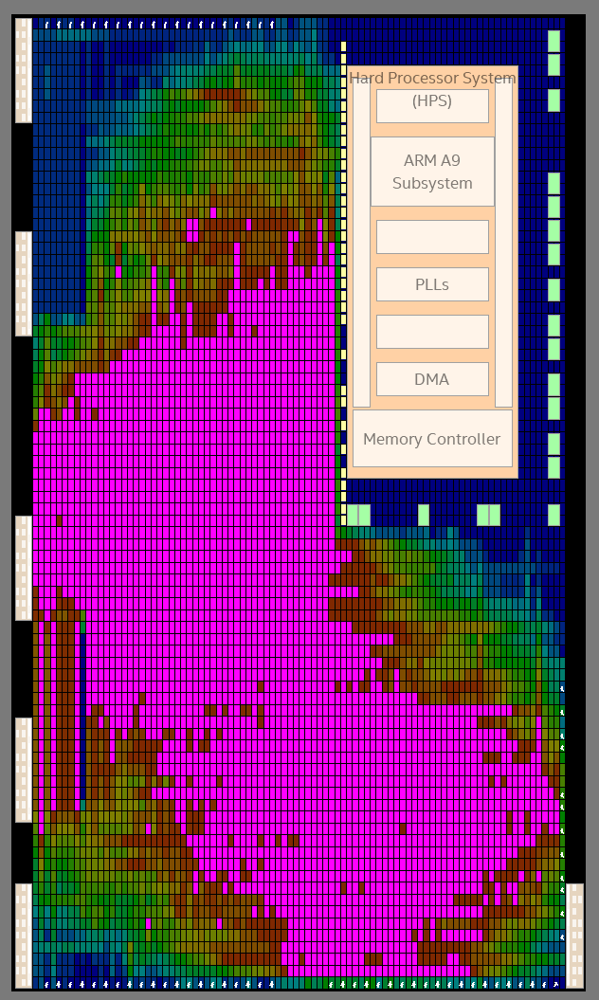
To show that our design works for the full ICCAD benchmark suite, we Verilated our design with a cell count of 12000 and ran our placer with the Verilator driver hardware shim on the ICCAD04 DMA benchmark. With Q13.14, we achieved results that aligned closely with the software solution for the same benchmark. Thus, given an FPGA with significantly more resources, our hardware design would be able to successfully place full-scale placement problems.
[TODO: did the project meet its goals; what would change next time]
[TODO: licenses, third-party code, originality of design]
The group approves this report for inclusion on the course website.
The group approves the video for inclusion on the course YouTube channel.
Our repository is located here.
Essential Issues in Analytical Placement Algorithm
An Implementation of the Conjugate Gradient Algorithm on FPGAs
Parker worked primarily on the design-space exploration of the hardware placer implementations. He started out by making the Python FL and V1 Verilog by hand and then exploring optimizations to the base hardware in later versions.
Jeremy did a significant portion of the background research for getting started on this project. He also wrote inital code for dealing with the LEF/DEF file formats and contributed to the C++ placer.
Colin focused mostly on writing Python utilities, architecting the initial hardware architecture, and gathering results across a variety of benchmarks to gauge placer results.
Claude Code (Opus 4.7) was used extensively throughout this project. Our reasoning for this is simple: our group wanted to perform rapid design-space exploration and see real, working results without worrying about the intricacies of M10K memory handling, or output signal selection in FSMs. We used Claude to help us formulate our original Python placement algorithm from the source documents, as well as to create a robust testing framework for running our placers. We created our own functional-level Python and V1 hardware, and then used Claude to convert our V1 hardware into synthesizable hardware by generating FSMs and to serialize the previously combinational operations. The later versions all built off of V2 by introducing optimizations implemented by Claude. We finally used Claude to help us fill in technical details in this report, specifically in the hardware section, as well as to perform grammar and clarity edits. Jeremy doesn't like LLM tools and did not use them for any part of his research, implementation or writing.